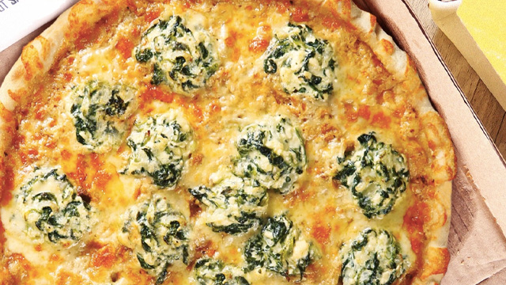

Pizza Recipe

Creamy Spinach Pizza Recipe
Want to eat a healthy yet delicious food?
This one is for you.
Ingredients
- 4 bundles of spinach pick the leaves, rinse and drain well
- 2 tbsp butter
- 3 cloves garlic minced
- 1 pc onion chopped
- 1/2 cup water
- 1 pack 250ml NESTLÉ All Purpose Cream
- 2 tsp MAGGI MAGIC SARAP
- 1/4 tsp freshly ground pepper
- 1/4 tsp grated nutmeg (optional)
- 2 tbsp grated cheese
- 2 tbsp mayonnaise
- 2 pcs large store-bought pizza dough
- 2 pcs tomato sliced
- 1 1/2 cups grated mozzarella cheese
- 4 tbsp grated parmesan cheese
Steps
- Boil water in a pot, season with salt and blanch spinach leaves for 10 seconds. Strain and immediately drop in ice-cold water. Drain and squeeze excess water from spinach leaves. Coarsely chop and set aside. (10mins)
- Sauté garlic and onion in butter. Pour water and NESTLÉ All Purpose Cream. Season with MAGGI MAGIC SARAP®, pepper and nutmeg. Stir in blanched spinach and cook for 1 minute. Turn off heat and stir in grated cheese and mayonnaise. Set aside. (10mins)
- Spread half of creamed spinach on pizza dough, top with tomato, mozzarella and parmesan cheese. Bake in a preheated oven for 10 minutes or until golden brown. (15mins)
- Top with the rest of the creamed spinach. Cut into eight serving pieces and serve. (5mins)